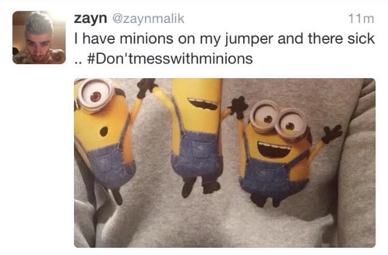

Culture
Culture Chair
Nikka Pelayo
- Junior in Aerospace and Ocean Engineering
Contact: npelayo@vt.edu - Favorite Disney Princess - ARIEL!!!
- Dream Job - Having no job
- If you could have any super power, what would it be? - Teleportation
- Most used phrase/word - "legiiit!"
- Favorite Quote - "Je ne regrette rien"
- I'm the reigning and undefeated FASA’s Biggest FOB, but I promise, I'm not THAT FOB. I confused a type of shoe and a chocolate bar once and pronounce the "L" in salmon, but other than that, I English pretty well. Maybe I can rub off some of my FOBness to everyone else when I teach Tagalog lessons and feed you a bunch of Filipino food.
Culture Chair
Anna Lacsamana
- Sophomore in Psychology
Contact: annalac1@vt.edu - Fav youtube video - if you're a fan of #zanessa or zac efron in bootcut jeans watch this
- Name a useless skill - i can recite the opening of "avatar: the last airbender" by heart
- Fav pokemon - minions
- Fav cartoon - Water. Earth. Fire. Air. Long ago, the four nations lived together in harmony. Then, everything changed when the Fire Nation attacked. Only the Avatar, master of all four elements, could stop them, but when the world needed him most, he vanished. A hundred years passed and my brother and I discovered the new Avatar, an airbender named Aang. And although his airbending skills are great, he has a lot to learn before he's ready to save anyone. But I believe Aang can save the world.
- What's the last pic you took on your phone - the last pic in my camera roll is a screencap of zayn protecting minion culture #don'tmesswithminions
- what she says: i'm fine. what she means: Greetings loved ones. My name is Anna and I'm just your average Gemini from Northern Virginia who's ready to put the "cult" in culture this year[: